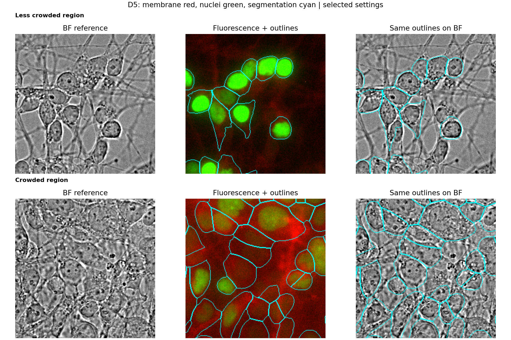
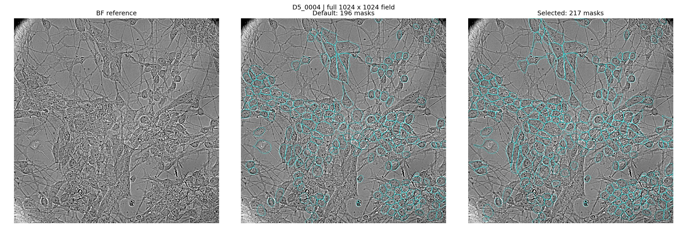
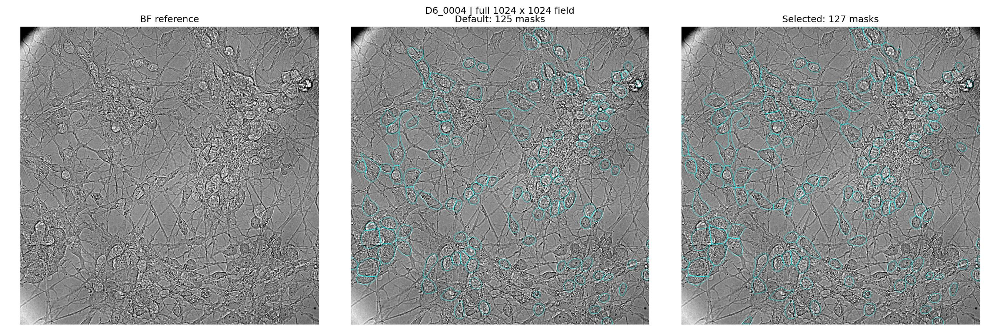
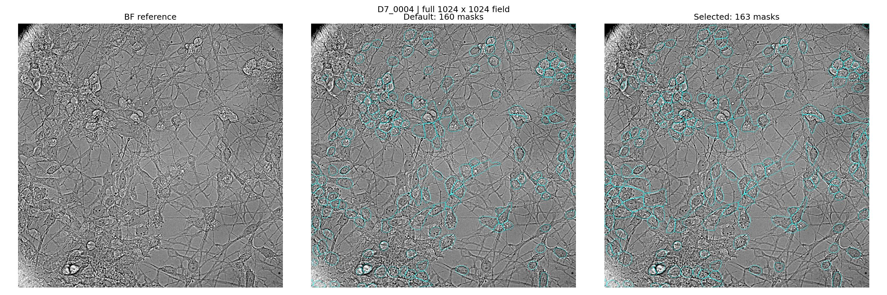
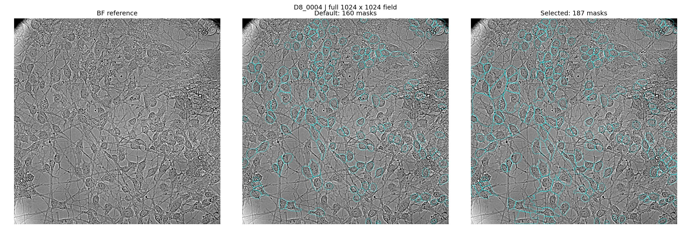
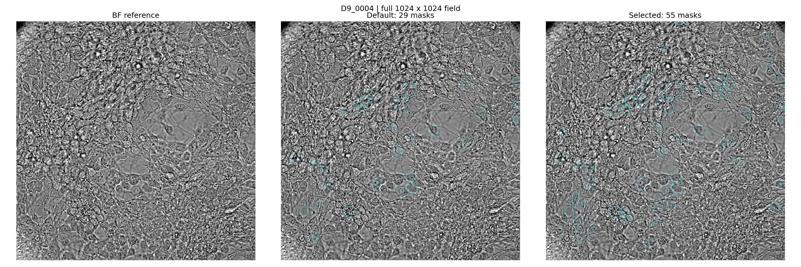
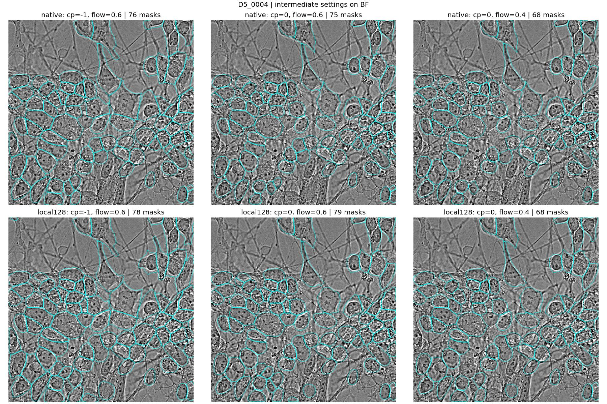
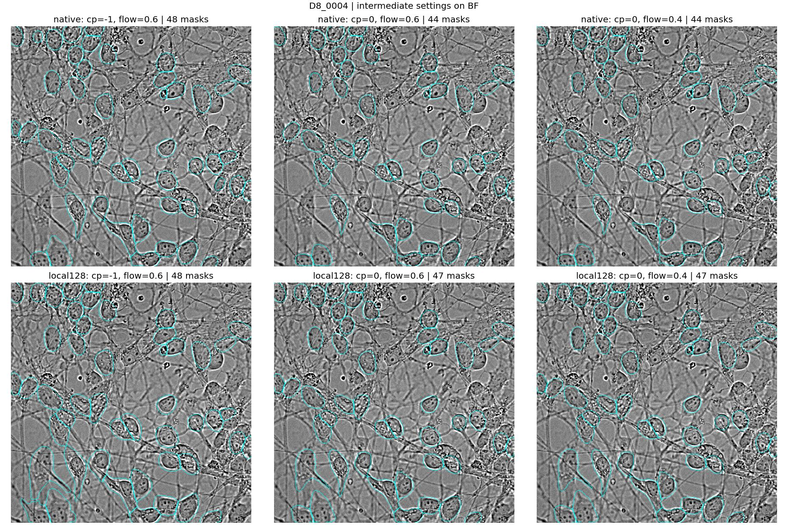

Selected working settings: 128-pixel local normalization, cellprob_threshold=0, flow_threshold=0.6, diameter unset, min_size=15. Model weights remain the pretrained cpsam_v2 weights; no training was performed. This is a visually selected compromise, not a measured optimum.
The masks mainly identify nuclear-centered cell-body candidates. They do not describe complete neurons, assign crossing neurites to individual cells, or establish a validated cell count. In dense areas, some masks can contain multiple nuclear candidates and some boundaries remain ambiguous.
Cyan lines are segmentation boundaries inferred from DAPI + GFP only; BF was not supplied to the model. Fluorescence is shown as membrane red and nuclei green. Compare an outline with both the BF cell-body appearance and the nuclear location. A larger region is not necessarily a better cell boundary. The three channels use the original acquisition coordinates; no registration correction or distortion correction was applied.

Tested 24 combinations per crop: native resolution, diameter 45 px, diameter 60 px, or local normalization 128 px; cell probability thresholds -2, 0, 2; flow thresholds 0.4 and 0.8. Refined native and local-normalization candidates with thresholds -1 and 0 and flow 0.6, with repeated 0/0.4 controls. This gives 28 unique combinations on each of two central crops (p004, p031). The other full fields were not used to select settings.
Negative thresholds admitted broad extensions and more potential merges in crowded regions. Threshold +2 contracted masks toward nuclei. The 45/60-pixel diameter settings often produced compact regions and did not solve neurite segmentation. Local normalization recovered additional body candidates in uneven fluorescence; flow 0.6 preserved more candidates than 0.4 without using the most permissive tested setting. Merges remain a known tradeoff, especially in D5.
GFP-only masks from the baseline were used only as a consistency check, not ground truth. A nuclear candidate was counted as assigned when at least 50% of its pixels fell within one combined-channel mask. In the D5 crop, assigned nuclear candidates increased from 68/87 to 82/87, but masks containing multiple nuclear candidates also increased from 2 to 6. In D8, assignment increased from 46/61 to 49/61 and the multi-candidate mask count stayed at 1. These diagnostic numbers are not precision, recall, accuracy, or proof of one cell per mask.
Five complete 1024 × 1024 fields, one central field per well, were segmented with both settings. This is five of the dataset's 45 fields. Counts include objects touching image edges. Full-field counts are not directly comparable to the earlier cropped counts, and normalization/context changes can affect masks within a crop.
| Field | Default masks | Selected masks |
|---|---|---|
| D5_0004 | 196 | 217 |
| D6_0004 | 125 | 127 |
| D7_0004 | 160 | 163 |
| D8_0004 | 160 | 187 |
| D9_0004 | 29 | 55 |
D9 has weak GFP signal across all nine acquired fields. Its combined-channel masks should not be interpreted as reliable nuclei-supported cell detections.

Native-resolution BF overlay · Selected integer labels · Default integer labels

Native-resolution BF overlay · Selected integer labels · Default integer labels

Native-resolution BF overlay · Selected integer labels · Default integer labels

Native-resolution BF overlay · Selected integer labels · Default integer labels

Native-resolution BF overlay · Selected integer labels · Default integer labels

native sweep · diam45 sweep · diam60 sweep · local128 sweep

native sweep · diam45 sweep · diam60 sweep · local128 sweep
Exact selected settings · Sweep diagnostics · Refinement diagnostics · Full-field counts
Saved label TIFFs preserve the original 1024 × 1024 geometry. Label 0 is background; positive values identify objects within each file. IDs do not correspond across different settings or fields. Inline display uses compressed images and simplified contours; the TIFF labels and native-resolution PNG overlays are the precise outputs.